同一台机器，四个引擎，2026-09-27 重测。每节先看图，表是全部数字。原始输出在 docs/benchmark/data/raw/，汇总在 docs/benchmark/data/all.json。
浏览器打开 docs/benchmark/report.html 时图会直接嵌在页里（用的是同名的 SVG）。图里的标题、坐标轴和图例都用英文，正文仍是中文。每张性能图都包含全部四个引擎；Goja 的数字比另外三家大几倍的图用对数轴。
| 引擎 | 二进制 |
|---|---|
| goc | build/qjs/qjscli --stack-size 16384，当前 main（a1f4dac）用 scripts/qjs-cli-build.sh 重新构建，默认 O3 + -DNDEBUG |
| native ng | QuickJS-ng 0.17.0，qjs -C --stack-size 16384（-C 是经典脚本） |
| Bellard | QuickJS 2026-06-04，上游 Makefile 默认构建（gcc -O2），qjs --stack-size 16M |
| Goja | cfe4039cb6d77b297d8b637182f774fa4a54b7d5，用 scripts/gojacli 运行 |
native ng 的构建：同一份 quickjs-ng 源码，CMake Release，编译器 clang-19，即 -O2 -DNDEBUG -std=gnu11 -funsigned-char（外加上游 CMakeLists 的 -fvisibility=hidden 和警告开关，宏 -D_GNU_SOURCE -DQUICKJS_NG_BUILD）。goc 侧 scripts/qjs-build.sh 也用 -DNDEBUG，O 级见 GOC_OPT_LEVEL；它不加 -funsigned-char（shim 与 cli host 共用这组宏，改 char 符号会改变它们的语义）。
native ng 不加 -C 时会把这些文件当成模块，松散赋值直接 ReferenceError，所以下面的 ng 数字都是 -C。
整套流程在 scripts/bench-all.sh 里，可以直接重跑。scripts/bench-summarize.py 把原始输出汇总成 all.json，scripts/bench-charts.py 画图，scripts/bench-tables.py 生成本页的表，scripts/bench-report-html.py 生成 report.html。内存部分由 scripts/bench-mem.sh 单独测量，结果同样汇总进 all.json。
taskset -c 3 固定在同一个核上。每一轮四个引擎各跑一次，下一轮换一个起始引擎，这样四家交替运行、处在同一时段。scripts/microcall-bench.sh）：四个引擎，5 轮，取中位数。V8-v7 和 SunSpider 是同一时段跑的（北京时间 07:49–08:14）。microbench 和微调用在同一天稍后另一个时段重跑（09:49–10:04），因为第一次跑 microbench 时 goc 缺 console 全局而没有出分，同时虚拟机被挂起了一段时间；那次的结果全部丢弃，没有用。微调用后来又在 11:13–11:16 加上 Bellard 和 Goja 四家重跑了一次，本页的微调用数字都来自这一次。内存在 11:16–12:05 测量。这台机器由多个任务共用，同一时段内的波动约 ±5%，每轮的数字都列在各节里。
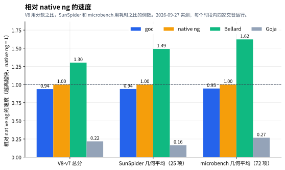
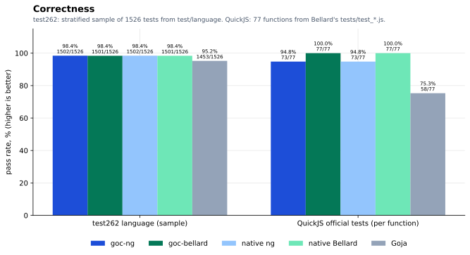
goc 和 native ng 在这批语法测试上是同一台引擎：test262 失败的文件相同，官方测试逐函数相同。速度上，goc 的 V8 总分是 native ng 的 0.94 倍，SunSpider 和 microbench 的几何平均分别慢 6.5% 和 5.8%。Bellard 比 native ng 快三到六成。Goja 比 goc 慢 3.5 到 6 倍。
内存上，goc 比 native ng 多一个约 6 到 9 MiB 的固定开销：空载时是 2.9 倍，大负载（整套 V8）时只有 1.06 倍。一个进程里每多一个存活的 runtime，goc 要 225 KiB，native ng 要 211 KiB，多出的部分主要是 goroutine 栈。Goja 空闲 runtime 最省（105 KiB），但跑负载时峰值最高，整套 V8 达到 native ng 的 8.8 倍。
这里是优化后的当前默认构建。和上一版报告相比，goc 与 native ng 的差距从“慢一成多”缩小到五六个百分点，优化的过程见下一节。
| 套件 | goc | native ng | Bellard | Goja | goc/ng | 怎么读 |
|---|---|---|---|---|---|---|
| V8-v7 总分（5 轮中位数） | 1128 | 1204 | 1567 | 262 | goc/ng 分数比 0.937 | 越高越快 |
| SunSpider 几何平均 ms（25 项） | 16.27 | 15.28 | 10.24 | 92.82 | 1.065 | 越低越快 |
| microbench 几何平均 ns（72 项） | 53.2 | 50.3 | 31.0 | 188.2 | 1.058 | 越低越快 |
| 微调用 score（calls/ms，5 轮中位数） | 22240 | 23800 | 31904 | 5193 | goc/ng 分数比 0.934 | 越高越快 |
| 空载峰值 RSS（MiB） | 8.5 | 2.9 | 2.9 | 5.9 | 2.89 | 越低越好 |
| V8-v7 整套峰值 RSS（MiB） | 164.5 | 155.5 | 147.0 | 1374.2 | 1.06 | 越低越好 |
| 每多一个存活 runtime 的 RSS（KiB） | 225 | 211 | 190 | 105 | 1.06 | 越低越好 |
| test262 通过 | 1502/1526 | 1502/1526 | 1501/1526 | 1453/1526 | 抽样，不是全量 | |
| QuickJS 官方测试 | 69/77 | 69/77 | 73/77 | 58/77 | 按函数计 |
上一版报告的 Bellard 和 Goja 数字（V8 1768 和 402）不能和这次直接比：上一版的 Bellard 构建方式没有记录，这次按上游 Makefile 默认参数重新构建；Goja 这次用的是仓库里新加的 scripts/gojacli（Go 1.24.4 编译）。这次四家都是新构建、同一时段测的，表里的比值可以直接看。
这一节是 2026-09-26 的优化记录，只比 goc 和 native ng。它比较的是 goc 自身几种构建的前后差别，Bellard 和 Goja 不在这组构建里，那一时段也没有测它们，所以这张表没有这两列。所有构建在同一时段交替运行，并用 taskset -c 3 固定在同一个核上。第 3 行就是上面总览里测的当前默认构建。不同时段的绝对分数不要直接比（比如这里 native ng 的 V8 是 1203，总览里是 1204），看同一张表里的比值。
native ng 用 clang-19 -O2 -DNDEBUG 编译（完整参数见本页开头）。各列含义如下：
bench-v8.js 总分，越高越快，取 5 轮中位数，括号里是最小到最大。scripts/microcall-bench.sh，calls/ms，越高越快，取 5 轮中位数。括号外的比值都是 goc 除以 native ng。
| 构建 | V8 中位（最小–最大） | 固定工作量 | 微调用 | SunSpider | 指令数 |
|---|---|---|---|---|---|
| native ng | 1203（1169–1221） | 3791 ms | 22954 | 16.46 ms | 17.13G |
| 0 优化前 | 1088（1053–1090） | 4153 / 1.095 | 18791 / 0.82 | 19.27 / 1.17 | 20.95G / 1.22 |
| 1 帧地址修正 + 栈搬移正确性修复 | 1058（1000–1089） | 4152 / 1.095 | 19672 / 0.86 | 18.75 / 1.14 | 21.27G / 1.24 |
2 -DNDEBUG | 1116（1092–1134） | 3911 / 1.032 | 21554 / 0.94 | 17.30 / 1.05 | 20.40G / 1.19 |
| 3 shim 快速路径（当前默认） | 1119（1095–1150） | 3879 / 1.023 | 21505 / 0.94 | 17.30 / 1.05 | 20.47G / 1.20 |
| 4 改用 O2（未采用） | 1128（1118–1135） | 3905 / 1.030 | 21103 / 0.92 | 17.56 / 1.07 | 20.47G / 1.20 |
在这一轮里，当前默认构建（第 3 行）和 native ng 相比，V8 总分约为 0.93 倍，固定工作量约慢 2.3%，SunSpider 约慢 5%，执行的指令约多 19.5%。
各行说明：
goc-llc 里的后端 pass GocFrameAddrFix 取代原来的内联汇编做法。这一行还包含几项栈搬移正确性修复：静态函数的 stackmap 重定位、根的活跃性分析、关闭 tail-merge，以及此前检测逻辑有误、从未真正打上的 qjs-gstack.patch。最后这项修复让 5 个与栈深度相关的 CLI 测试由失败变为通过。这些修复有代价，所以这一行比优化前略慢。和“同样修好正确性、但沿用旧汇编方案”的构建相比，新方案的 V8 是 1095 对 1081，固定工作量是 4070 对 4161 ms，指令数是 21.27G 对 22.65G（这组数据来自另一时段）。旧方案仍可用 GOC_FRAMEADDR_MODE=asm 打开。memcpy/memset 走快速路径，malloc 按尺寸分档缓存。第 2 行到第 3 行的差别在噪声范围内，但分配密集的测试（alloc.js）快了约 11%。GOC_OPT_LEVEL）。每一行都通过了同一套正确性检查，结果和优化前逐行一致：test262 抽样 1502/1526，QuickJS 官方测试 69/77，两者都和 native ng 零差异。另外，300 个 goroutine 的栈增长扫描也全部通过。
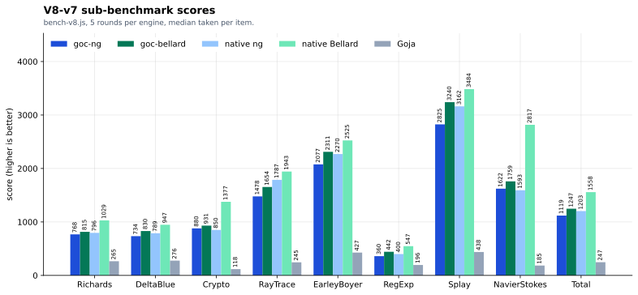
bench-v8.js（QuickJS 树里 tests/bench-v8 的合并版，前面加了一行 console 兜底）。每个子项取 5 轮中位数，所以子项之间不一定能算回总分。
| 子项 | goc | native ng | Bellard | Goja | goc/ng |
|---|---|---|---|---|---|
| Richards | 773 | 796 | 1048 | 265 | 0.97 |
| DeltaBlue | 743 | 793 | 960 | 277 | 0.94 |
| Crypto | 886 | 857 | 1387 | 120 | 1.03 |
| RayTrace | 1491 | 1757 | 1955 | 246 | 0.85 |
| EarleyBoyer | 2118 | 2245 | 2498 | 425 | 0.94 |
| RegExp | 362 | 412 | 549 | 198 | 0.88 |
| Splay | 2776 | 3203 | 3468 | 664 | 0.87 |
| NavierStokes | 1626 | 1600 | 2815 | 188 | 1.02 |
| 总分 | 1128 | 1204 | 1567 | 262 | 0.937 |
goc 在 Crypto 和 NavierStokes 上与 native ng 持平或略快，差距主要在 RayTrace、Splay 和 RegExp，都在一成多一点。
各轮总分：
| 引擎 | 各轮总分 | 中位数 | 最小–最大 | 单轮墙钟中位数 |
|---|---|---|---|---|
| goc | 1110 / 1078 / 1141 / 1138 / 1128 | 1128 | 1078–1141 | 38.6 s |
| native ng | 1199 / 1204 / 1207 / 1224 / 1196 | 1204 | 1196–1224 | 37.3 s |
| Bellard | 1565 / 1547 / 1576 / 1567 / 1571 | 1567 | 1547–1576 | 32.6 s |
| Goja | 252 / 262 / 255 / 268 / 265 | 262 | 252–268 | 124.0 s |
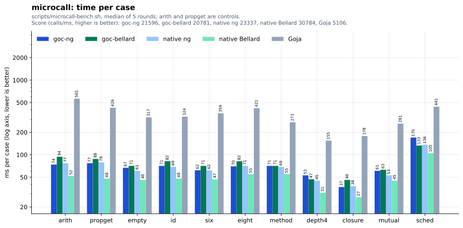
scripts/microcall-bench.sh，四个引擎都跑（Bellard 用 --stack-size 16M，Goja 用 gojacli）。每个用例的 ms 取 5 轮中位数，越低越快；score 是调用类用例的 calls/ms 几何平均，越高越快，括号里是最小到最大。arith 和 propget 是对照组，不计入 score。
| 用例 | goc ms | native ng ms | Bellard ms | Goja ms | goc/ng |
|---|---|---|---|---|---|
| arith | 74 | 75 | 51 | 548 | 0.99 |
| propget | 75 | 78 | 48 | 412 | 0.96 |
| empty | 66 | 59 | 46 | 307 | 1.12 |
| id | 70 | 66 | 47 | 347 | 1.06 |
| six | 61 | 60 | 45 | 341 | 1.02 |
| eight | 68 | 69 | 54 | 419 | 0.99 |
| method | 69 | 68 | 53 | 267 | 1.01 |
| depth4 | 53 | 44 | 30 | 152 | 1.20 |
| closure | 36 | 37 | 26 | 177 | 0.97 |
| mutual | 59 | 52 | 43 | 256 | 1.13 |
| sched | 164 | 131 | 99 | 435 | 1.25 |
| score（calls/ms，越高越快） | 22240（21788–22318） | 23800（23398–24207） | 31904（31312–31914） | 5193（5096–5203） | 0.93 |
goc 的调用速度是 native ng 的 0.93 倍（上一版是 19556 对 23356，0.84 倍）。差距最大的仍是深调用链（depth4）、互相递归（mutual）和调度（sched），都在两到三成。Bellard 的 score 是 native ng 的 1.34 倍，Goja 是 0.22 倍；Goja 在对照组 arith 上也慢 7 倍多，所以它的差距不只在调用上。
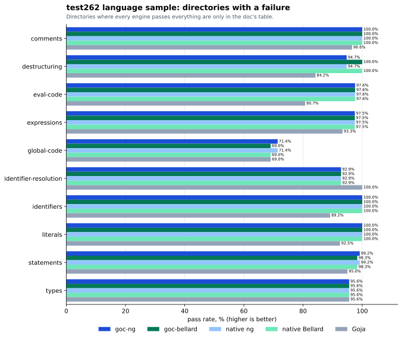
tc39/test262 7ab7faf 的 test/language，由 scripts/test262-sample.py 抽样。每项一个新进程，assert.js + sta.js，直接 eval。跳过 import / export / module-code，以及 module / async / raw / CanBlock，还有 Atomics、SharedArrayBuffer、agent。每目录均匀抽取最多 80 个正例和 40 个反例。合格池 13898 正例 + 4252 反例，实跑 1526。不是官方全量 harness，也没有每项新 realm。
结果和上一版完全相同：四家的通过数和失败的文件都没有变。
| 目录 | 合格正例 | 合格反例 | 实跑 | goc | native ng | Bellard | Goja |
|---|---|---|---|---|---|---|---|
| arguments-object | 200 | 1 | 81 | 81/81 | 81/81 | 81/81 | 81/81 |
| asi | 67 | 35 | 102 | 102/102 | 102/102 | 102/102 | 102/102 |
| block-scope | 43 | 102 | 83 | 83/83 | 83/83 | 83/83 | 83/83 |
| comments | 21 | 8 | 29 | 29/29 | 29/29 | 29/29 | 28/29 |
| computed-property-names | 48 | 0 | 48 | 48/48 | 48/48 | 48/48 | 48/48 |
| destructuring | 19 | 0 | 19 | 18/19 | 18/19 | 19/19 | 16/19 |
| directive-prologue | 51 | 6 | 57 | 57/57 | 57/57 | 57/57 | 57/57 |
| eval-code | 292 | 3 | 83 | 81/83 | 81/83 | 81/83 | 67/83 |
| expressions | 6903 | 2015 | 120 | 117/120 | 117/120 | 117/120 | 112/120 |
| function-code | 217 | 0 | 80 | 80/80 | 80/80 | 80/80 | 80/80 |
| future-reserved-words | 29 | 26 | 55 | 55/55 | 55/55 | 55/55 | 55/55 |
| global-code | 27 | 15 | 42 | 30/42 | 30/42 | 29/42 | 29/42 |
| identifier-resolution | 12 | 2 | 14 | 13/14 | 13/14 | 13/14 | 14/14 |
| identifiers | 152 | 116 | 120 | 120/120 | 120/120 | 120/120 | 107/120 |
| keywords | 0 | 25 | 25 | 25/25 | 25/25 | 25/25 | 25/25 |
| line-terminators | 17 | 24 | 41 | 41/41 | 41/41 | 41/41 | 41/41 |
| literals | 215 | 321 | 120 | 120/120 | 120/120 | 120/120 | 111/120 |
| punctuators | 1 | 10 | 11 | 11/11 | 11/11 | 11/11 | 11/11 |
| reserved-words | 14 | 12 | 26 | 26/26 | 26/26 | 26/26 | 26/26 |
| rest-parameters | 10 | 1 | 11 | 11/11 | 11/11 | 11/11 | 11/11 |
| source-text | 1 | 0 | 1 | 1/1 | 1/1 | 1/1 | 1/1 |
| statementList | 80 | 0 | 80 | 80/80 | 80/80 | 80/80 | 80/80 |
| statements | 5316 | 1513 | 120 | 119/120 | 119/120 | 118/120 | 114/120 |
| types | 102 | 11 | 91 | 87/91 | 87/91 | 87/91 | 87/91 |
| white-space | 61 | 6 | 67 | 67/67 | 67/67 | 67/67 | 67/67 |
goc 与 native ng 的失败路径相同。共同缺口是旧式全局 var 属性、少量该抛未抛的早期错误、3 个 $262.createRealm、2 个模块片段、1 个 decorator。Bellard 多过一个 destructuring 求值顺序测试，另失败 decl-lex-restricted-global 和 using/static-init-await-binding-valid。Goja 多出来的主要是 async generator、class fields、regexp v flag。
失败清单：
| 引擎 | 路径 | 结果 |
|---|---|---|
| goc | destructuring/binding/keyed-destructuring-property-reference-target-evaluation-order-with-bindings.js | FAIL undefined: Test262Error: Actual [binding::source, binding::sourceKey, sourceKey, get source, binding::defaultValue, binding::varTarget] |
| goc | eval-code/indirect/lex-env-heritage.js | FAIL ReferenceError: ReferenceError: x is not defined |
| goc | eval-code/indirect/var-env-global-lex-non-strict.js | FAIL undefined: Test262Error: Expected SameValue(«undefined», «undefined») to be false |
| goc | expressions/class/private-setter-brand-check-multiple-evaluations-of-class-realm-function-ctor.js | FAIL Error: Error: $262.createRealm |
| goc | expressions/dynamic-import/assignment-expression/module-code-other_FIXTURE.js | FAIL SyntaxError: SyntaxError: unsupported keyword: export |
| goc | expressions/dynamic-import/syntax/valid/nested-else-import-defer-script-code-valid.js | FAIL SyntaxError: SyntaxError: meta expected |
| goc | global-code/S10.4.1_A1_T1.js | FAIL undefined: Test262Error: #2: variable x has property attribute DontDelete |
| goc | global-code/decl-func.js | FAIL undefined: Test262Error: brandNew descriptor should not be configurable |
| goc | global-code/decl-var.js | FAIL undefined: Test262Error: brandNew descriptor should not be configurable |
| goc | global-code/script-decl-func.js | FAIL undefined: Test262Error: brandNew descriptor should not be configurable |
| goc | global-code/script-decl-lex-deletion.js | FAIL ReferenceError: ReferenceError: test262let is not defined |
| goc | global-code/script-decl-lex-lex.js | FAIL undefined: Test262Error: let binding Expected a SyntaxError to be thrown but no exception was thrown at all |
| goc | global-code/script-decl-lex-restricted-global.js | FAIL undefined: Test262Error: Expected a SyntaxError to be thrown but no exception was thrown at all |
| goc | global-code/script-decl-lex-var-declared-via-eval.js | FAIL undefined: Test262Error: Expected SameValue(«undefined», «1») to be true |
| goc | global-code/script-decl-lex-var.js | FAIL undefined: Test262Error: variable Expected a SyntaxError to be thrown but no exception was thrown at all |
| goc | global-code/script-decl-lex.js | FAIL ReferenceError: ReferenceError: test262let is not defined |
| goc | global-code/script-decl-var-collision.js | FAIL undefined: Test262Error: var on let binding Expected a SyntaxError to be thrown but no exception was thrown at all |
| goc | global-code/script-decl-var.js | FAIL undefined: Test262Error: brandNew descriptor should not be configurable |
| goc | identifier-resolution/assign-to-global-undefined.js | FAIL expected ReferenceError |
| goc | statements/class/decorator/syntax/valid/decorator-parenthesized-expr-identifier-reference.js | FAIL SyntaxError: SyntaxError: unexpected token in expression: '@' |
| goc | types/reference/S8.7.1_A2.js | FAIL undefined: Test262Error: #1: y = 1; (delete y) === false. Actual: true |
| goc | types/reference/S8.7_A5_T1.js | FAIL undefined: Test262Error: #3: obj = new Object(); var __ref = obj; delete __ref === false. Actual: true |
| goc | types/reference/get-value-prop-base-primitive-realm.js | FAIL Error: Error: $262.createRealm |
| goc | types/reference/put-value-prop-base-primitive-realm.js | FAIL Error: Error: $262.createRealm |
| ng | destructuring/binding/keyed-destructuring-property-reference-target-evaluation-order-with-bindings.js | FAIL undefined: Test262Error: Actual [binding::source, binding::sourceKey, sourceKey, get source, binding::defaultValue, binding::varTarget] |
| ng | eval-code/indirect/lex-env-heritage.js | FAIL ReferenceError: ReferenceError: x is not defined |
| ng | eval-code/indirect/var-env-global-lex-non-strict.js | FAIL undefined: Test262Error: Expected SameValue(«undefined», «undefined») to be false |
| ng | expressions/class/private-setter-brand-check-multiple-evaluations-of-class-realm-function-ctor.js | FAIL Error: Error: $262.createRealm |
| ng | expressions/dynamic-import/assignment-expression/module-code-other_FIXTURE.js | FAIL SyntaxError: SyntaxError: unsupported keyword: export |
| ng | expressions/dynamic-import/syntax/valid/nested-else-import-defer-script-code-valid.js | FAIL SyntaxError: SyntaxError: meta expected |
| ng | global-code/S10.4.1_A1_T1.js | FAIL undefined: Test262Error: #2: variable x has property attribute DontDelete |
| ng | global-code/decl-func.js | FAIL undefined: Test262Error: brandNew descriptor should not be configurable |
| ng | global-code/decl-var.js | FAIL undefined: Test262Error: brandNew descriptor should not be configurable |
| ng | global-code/script-decl-func.js | FAIL undefined: Test262Error: brandNew descriptor should not be configurable |
| ng | global-code/script-decl-lex-deletion.js | FAIL ReferenceError: ReferenceError: test262let is not defined |
| ng | global-code/script-decl-lex-lex.js | FAIL undefined: Test262Error: let binding Expected a SyntaxError to be thrown but no exception was thrown at all |
| ng | global-code/script-decl-lex-restricted-global.js | FAIL undefined: Test262Error: Expected a SyntaxError to be thrown but no exception was thrown at all |
| ng | global-code/script-decl-lex-var-declared-via-eval.js | FAIL undefined: Test262Error: Expected SameValue(«undefined», «1») to be true |
| ng | global-code/script-decl-lex-var.js | FAIL undefined: Test262Error: variable Expected a SyntaxError to be thrown but no exception was thrown at all |
| ng | global-code/script-decl-lex.js | FAIL ReferenceError: ReferenceError: test262let is not defined |
| ng | global-code/script-decl-var-collision.js | FAIL undefined: Test262Error: var on let binding Expected a SyntaxError to be thrown but no exception was thrown at all |
| ng | global-code/script-decl-var.js | FAIL undefined: Test262Error: brandNew descriptor should not be configurable |
| ng | identifier-resolution/assign-to-global-undefined.js | FAIL expected ReferenceError |
| ng | statements/class/decorator/syntax/valid/decorator-parenthesized-expr-identifier-reference.js | FAIL SyntaxError: SyntaxError: unexpected token in expression: '@' |
| ng | types/reference/S8.7.1_A2.js | FAIL undefined: Test262Error: #1: y = 1; (delete y) === false. Actual: true |
| ng | types/reference/S8.7_A5_T1.js | FAIL undefined: Test262Error: #3: obj = new Object(); var __ref = obj; delete __ref === false. Actual: true |
| ng | types/reference/get-value-prop-base-primitive-realm.js | FAIL Error: Error: $262.createRealm |
| ng | types/reference/put-value-prop-base-primitive-realm.js | FAIL Error: Error: $262.createRealm |
| bellard | eval-code/indirect/lex-env-heritage.js | FAIL ReferenceError: ReferenceError: 'x' is not defined |
| bellard | eval-code/indirect/var-env-global-lex-non-strict.js | FAIL undefined: Test262Error: Expected SameValue(«undefined», «undefined») to be false |
| bellard | expressions/class/private-setter-brand-check-multiple-evaluations-of-class-realm-function-ctor.js | FAIL Error: Error: $262.createRealm |
| bellard | expressions/dynamic-import/assignment-expression/module-code-other_FIXTURE.js | FAIL SyntaxError: SyntaxError: unsupported keyword: export |
| bellard | expressions/dynamic-import/syntax/valid/nested-else-import-defer-script-code-valid.js | FAIL SyntaxError: SyntaxError: meta expected |
| bellard | global-code/S10.4.1_A1_T1.js | FAIL undefined: Test262Error: #2: variable x has property attribute DontDelete |
| bellard | global-code/decl-func.js | FAIL undefined: Test262Error: brandNew descriptor should not be configurable |
| bellard | global-code/decl-lex-restricted-global.js | FAIL expected SyntaxError |
| bellard | global-code/decl-var.js | FAIL undefined: Test262Error: brandNew descriptor should not be configurable |
| bellard | global-code/script-decl-func.js | FAIL undefined: Test262Error: brandNew descriptor should not be configurable |
| bellard | global-code/script-decl-lex-deletion.js | FAIL ReferenceError: ReferenceError: 'test262let' is not defined |
| bellard | global-code/script-decl-lex-lex.js | FAIL undefined: Test262Error: let binding Expected a SyntaxError to be thrown but no exception was thrown at all |
| bellard | global-code/script-decl-lex-restricted-global.js | FAIL undefined: Test262Error: Expected a SyntaxError to be thrown but no exception was thrown at all |
| bellard | global-code/script-decl-lex-var-declared-via-eval.js | FAIL undefined: Test262Error: Expected SameValue(«undefined», «1») to be true |
| bellard | global-code/script-decl-lex-var.js | FAIL undefined: Test262Error: variable Expected a SyntaxError to be thrown but no exception was thrown at all |
| bellard | global-code/script-decl-lex.js | FAIL ReferenceError: ReferenceError: 'test262let' is not defined |
| bellard | global-code/script-decl-var-collision.js | FAIL undefined: Test262Error: var on let binding Expected a SyntaxError to be thrown but no exception was thrown at all |
| bellard | global-code/script-decl-var.js | FAIL undefined: Test262Error: brandNew descriptor should not be configurable |
| bellard | identifier-resolution/assign-to-global-undefined.js | FAIL expected ReferenceError |
| bellard | statements/class/decorator/syntax/valid/decorator-parenthesized-expr-identifier-reference.js | FAIL SyntaxError: SyntaxError: unexpected token in expression: '@' |
| bellard | statements/using/static-init-await-binding-valid.js | FAIL SyntaxError: SyntaxError: expecting ';' |
| bellard | types/reference/S8.7.1_A2.js | FAIL undefined: Test262Error: #1: y = 1; (delete y) === false. Actual: true |
| bellard | types/reference/S8.7_A5_T1.js | FAIL undefined: Test262Error: #3: obj = new Object(); var __ref = obj; delete __ref === false. Actual: true |
| bellard | types/reference/get-value-prop-base-primitive-realm.js | FAIL Error: Error: $262.createRealm |
| bellard | types/reference/put-value-prop-base-primitive-realm.js | FAIL Error: Error: $262.createRealm |
| goja | comments/hashbang/function-constructor.js | FAIL SyntaxError: SyntaxError: SyntaxError: Async generators are not supported yet at <eval>:16:33 |
| goja | destructuring/binding/syntax/destructuring-array-parameters-function-arguments-length.js | FAIL SyntaxError: SyntaxError: SyntaxError: Async generators are not supported yet at <eval>:34:19 |
| goja | destructuring/binding/syntax/destructuring-object-parameters-function-arguments-length.js | FAIL SyntaxError: SyntaxError: SyntaxError: Async generators are not supported yet at <eval>:34:19 |
| goja | destructuring/binding/typedarray-backed-by-resizable-buffer.js | FAIL TypeError: TypeError: Object has no member 'resize' |
| goja | eval-code/direct/async-gen-func-decl-a-preceding-parameter-is-named-arguments-declare-arguments.js | FAIL SyntaxError: SyntaxError: SyntaxError: Async generators are not supported yet at <eval>:12:1 |
| goja | eval-code/direct/async-gen-func-decl-fn-body-cntns-arguments-lex-bind-declare-arguments-and-assign.js | FAIL SyntaxError: SyntaxError: SyntaxError: Async generators are not supported yet at <eval>:12:1 |
| goja | eval-code/direct/async-gen-func-decl-no-pre-existing-arguments-bindings-are-present-declare-arguments-and-assign.js | FAIL SyntaxError: SyntaxError: SyntaxError: Async generators are not supported yet at <eval>:12:1 |
| goja | eval-code/direct/async-gen-func-expr-a-preceding-parameter-is-named-arguments-declare-arguments-and-assign.js | FAIL SyntaxError: SyntaxError: SyntaxError: Async generators are not supported yet at <eval>:12:9 |
| goja | eval-code/direct/async-gen-func-expr-fn-body-cntns-arguments-func-decl-declare-arguments.js | FAIL SyntaxError: SyntaxError: SyntaxError: Async generators are not supported yet at <eval>:12:9 |
| goja | eval-code/direct/async-gen-func-expr-fn-body-cntns-arguments-var-bind-declare-arguments.js | FAIL SyntaxError: SyntaxError: SyntaxError: Async generators are not supported yet at <eval>:12:9 |
| goja | eval-code/direct/async-gen-meth-a-following-parameter-is-named-arguments-declare-arguments.js | FAIL SyntaxError: SyntaxError: SyntaxError: <eval>: Line 12:18 Unexpected token * (and 9 more errors) |
| goja | eval-code/direct/async-gen-meth-fn-body-cntns-arguments-func-decl-declare-arguments.js | FAIL SyntaxError: SyntaxError: SyntaxError: <eval>: Line 12:18 Unexpected token * (and 12 more errors) |
| goja | eval-code/direct/async-gen-meth-fn-body-cntns-arguments-var-bind-declare-arguments-and-assign.js | FAIL SyntaxError: SyntaxError: SyntaxError: <eval>: Line 12:18 Unexpected token * (and 16 more errors) |
| goja | eval-code/direct/async-gen-named-func-expr-a-following-parameter-is-named-arguments-declare-arguments-and-assign.js | FAIL SyntaxError: SyntaxError: SyntaxError: Async generators are not supported yet at <eval>:12:9 |
| goja | eval-code/direct/async-gen-named-func-expr-fn-body-cntns-arguments-func-decl-declare-arguments-and-assign.js | FAIL SyntaxError: SyntaxError: SyntaxError: Async generators are not supported yet at <eval>:12:9 |
| goja | eval-code/direct/async-gen-named-func-expr-fn-body-cntns-arguments-lex-bind-declare-arguments.js | FAIL SyntaxError: SyntaxError: SyntaxError: Async generators are not supported yet at <eval>:12:9 |
| goja | eval-code/direct/async-gen-named-func-expr-no-pre-existing-arguments-bindings-are-present-declare-arguments.js | FAIL SyntaxError: SyntaxError: SyntaxError: Async generators are not supported yet at <eval>:12:9 |
| goja | eval-code/direct/var-env-global-lex-non-strict.js | FAIL expected SyntaxError |
| goja | eval-code/indirect/lex-env-heritage.js | FAIL ReferenceError: ReferenceError: x is not defined |
| goja | eval-code/indirect/var-env-global-lex-non-strict.js | FAIL undefined: Test262Error: Expected SameValue(«undefined», «undefined») to be false |
| goja | expressions/async-generator/dstr/dflt-ary-ptrn-elision-step-err.js | FAIL SyntaxError: SyntaxError: SyntaxError: Async generators are not supported yet at <eval>:43:9 |
| goja | expressions/async-generator/named-dflt-params-ref-self.js | FAIL SyntaxError: SyntaxError: SyntaxError: Async generators are not supported yet at <eval>:35:5 |
| goja | expressions/class/dstr/async-gen-meth-obj-ptrn-prop-id-init-unresolvable.js | FAIL SyntaxError: SyntaxError: SyntaxError: Async generators are not supported yet at <eval>:62:3 |
| goja | expressions/class/private-setter-brand-check-multiple-evaluations-of-class-realm-function-ctor.js | FAIL Error: Error: $262.createRealm |
| goja | expressions/dynamic-import/assignment-expression/module-code-other_FIXTURE.js | FAIL SyntaxError: SyntaxError: SyntaxError: <eval>: Line 6:1 Unexpected reserved word (and 2 more errors) |
| goja | expressions/dynamic-import/syntax/valid/nested-async-arrow-function-await-nested-imports.js | FAIL SyntaxError: SyntaxError: SyntaxError: <eval>: Line 26:9 Unexpected reserved word (and 2 more errors) |
| goja | expressions/dynamic-import/syntax/valid/nested-else-import-defer-script-code-valid.js | FAIL SyntaxError: SyntaxError: SyntaxError: <eval>: Line 28:3 Unexpected reserved word (and 1 more errors) |
| goja | expressions/object/dstr/async-gen-meth-obj-init-undefined.js | FAIL SyntaxError: SyntaxError: SyntaxError: <eval>: Line 32:10 Unexpected token * (and 4 more errors) |
| goja | global-code/S10.4.1_A1_T1.js | FAIL undefined: Test262Error: #2: variable x has property attribute DontDelete |
| goja | global-code/decl-func.js | FAIL undefined: Test262Error: brandNew descriptor should not be configurable |
| goja | global-code/decl-lex-restricted-global.js | FAIL expected SyntaxError |
| goja | global-code/decl-var.js | FAIL undefined: Test262Error: brandNew descriptor should not be configurable |
| goja | global-code/script-decl-func.js | FAIL undefined: Test262Error: brandNew descriptor should not be configurable |
| goja | global-code/script-decl-lex-deletion.js | FAIL ReferenceError: ReferenceError: test262let is not defined |
| goja | global-code/script-decl-lex-lex.js | FAIL undefined: Test262Error: let binding Expected a SyntaxError to be thrown but no exception was thrown at all |
| goja | global-code/script-decl-lex-restricted-global.js | FAIL undefined: Test262Error: Expected a SyntaxError to be thrown but no exception was thrown at all |
| goja | global-code/script-decl-lex-var-declared-via-eval.js | FAIL undefined: Test262Error: Expected SameValue(«undefined», «1») to be true |
| goja | global-code/script-decl-lex-var.js | FAIL undefined: Test262Error: variable Expected a SyntaxError to be thrown but no exception was thrown at all |
| goja | global-code/script-decl-lex.js | FAIL ReferenceError: ReferenceError: test262let is not defined |
| goja | global-code/script-decl-var-collision.js | FAIL undefined: Test262Error: var on let binding Expected a SyntaxError to be thrown but no exception was thrown at all |
| goja | global-code/script-decl-var.js | FAIL undefined: Test262Error: brandNew descriptor should not be configurable |
| goja | identifiers/part-unicode-15.1.0-class-escaped.js | FAIL SyntaxError: SyntaxError: SyntaxError: <eval>: Line 19:22 Unexpected token ILLEGAL (and 1 more errors) |
| goja | identifiers/part-unicode-15.1.0-class.js | FAIL SyntaxError: SyntaxError: SyntaxError: <eval>: Line 16:11 Unexpected token ILLEGAL (and 4 more errors) |
| goja | identifiers/part-unicode-15.1.0.js | FAIL SyntaxError: SyntaxError: SyntaxError: <eval>: Line 14:12 Unexpected token ILLEGAL (and 3 more errors) |
| goja | identifiers/part-unicode-16.0.0-class.js | FAIL SyntaxError: SyntaxError: SyntaxError: <eval>: Line 16:5 Unexpected token ILLEGAL (and 133 more errors) |
| goja | identifiers/part-unicode-16.0.0.js | FAIL SyntaxError: SyntaxError: SyntaxError: <eval>: Line 14:6 Unexpected token ILLEGAL (and 132 more errors) |
| goja | identifiers/part-unicode-17.0.0-class.js | FAIL SyntaxError: SyntaxError: SyntaxError: <eval>: Line 16:5 Unexpected token ILLEGAL (and 54 more errors) |
| goja | identifiers/part-unicode-17.0.0.js | FAIL SyntaxError: SyntaxError: SyntaxError: <eval>: Line 14:6 Unexpected token ILLEGAL (and 53 more errors) |
| goja | identifiers/start-unicode-15.1.0-class.js | FAIL SyntaxError: SyntaxError: SyntaxError: <eval>: Line 16:4 Unexpected token ILLEGAL (and 1865 more errors) |
| goja | identifiers/start-unicode-15.1.0-escaped.js | FAIL SyntaxError: SyntaxError: SyntaxError: <eval>: Line 16:5 Unexpected token ILLEGAL (and 1242 more errors) |
| goja | identifiers/start-unicode-16.0.0-class-escaped.js | FAIL SyntaxError: SyntaxError: SyntaxError: <eval>: Line 19:9 Unexpected token ILLEGAL (and 9 more errors) |
| goja | identifiers/start-unicode-16.0.0-escaped.js | FAIL SyntaxError: SyntaxError: SyntaxError: <eval>: Line 16:5 Unexpected token ILLEGAL (and 8602 more errors) |
| goja | identifiers/start-unicode-17.0.0-class-escaped.js | FAIL SyntaxError: SyntaxError: SyntaxError: <eval>: Line 19:9 Unexpected token ILLEGAL (and 9 more errors) |
| goja | identifiers/start-unicode-17.0.0-escaped.js | FAIL SyntaxError: SyntaxError: SyntaxError: <eval>: Line 16:5 Unexpected token ILLEGAL (and 9292 more errors) |
| goja | literals/regexp/S7.8.5_A1.4_T2.js | FAIL undefined: Test262Error: Code unit: d800 Expected SameValue(«"\\\\\\ud800"», «"\\\ud800"») to be true |
| goja | literals/regexp/S7.8.5_A2.1_T2.js | FAIL undefined: Test262Error: Code unit: d800 Expected SameValue(«"nnnn\\ud800"», «"nnnn\ud800"») to be true |
| goja | literals/regexp/invalid-range-lookbehind.js | FAIL expected SyntaxError got String: Test262: This statement should not be evaluated. |
| goja | literals/regexp/u-case-mapping.js | FAIL undefined: Test262Error: Case mapping is not applied in the absence of the u flag Expected SameValue(«true», «false») to be true |
| goja | literals/regexp/u-invalid-range-lookahead.js | FAIL expected SyntaxError got String: Test262: This statement should not be evaluated. |
| goja | literals/string/S7.8.4_A4.3_T2.js | FAIL expected SyntaxError got String: Test262: This statement should not be evaluated. |
| goja | literals/string/legacy-non-octal-escape-sequence-2-strict-explicit-pragma.js | FAIL expected SyntaxError got String: Test262: This statement should not be evaluated. |
| goja | literals/string/legacy-non-octal-escape-sequence-9-strict-explicit-pragma.js | FAIL expected SyntaxError got String: Test262: This statement should not be evaluated. |
| goja | literals/string/legacy-octal-escape-sequence.js | FAIL undefined: Test262Error: \400 Expected SameValue(«"Ā"», «" 0"») to be true |
| goja | statements/class/decorator/syntax/valid/decorator-parenthesized-expr-identifier-reference.js | FAIL SyntaxError: SyntaxError: SyntaxError: <eval>: Line 54:1 Unexpected token ILLEGAL (and 7 more errors) |
| goja | statements/class/dstr/async-gen-meth-dflt-ary-ptrn-elem-id-iter-val-err.js | FAIL SyntaxError: SyntaxError: SyntaxError: Async generators are not supported yet at <eval>:74:3 |
| goja | statements/class/dstr/async-gen-meth-static-dflt-obj-ptrn-prop-id-init-throws.js | FAIL SyntaxError: SyntaxError: SyntaxError: Async generators are not supported yet at <eval>:57:10 |
| goja | statements/for-await-of/let-block-with-newline.js | FAIL SyntaxError: SyntaxError: SyntaxError: <eval>: Line 17:7 Unexpected token await (and 10 more errors) |
| goja | statements/let/global-closure-set-before-initialization.js | FAIL undefined: Test262Error: Expected a ReferenceError to be thrown but no exception was thrown at all |
| goja | statements/using/static-init-await-binding-valid.js | FAIL SyntaxError: SyntaxError: SyntaxError: <eval>: Line 17:20 Unexpected token await (and 5 more errors) |
| goja | types/reference/S8.7.1_A2.js | FAIL undefined: Test262Error: #1: y = 1; (delete y) === false. Actual: true |
| goja | types/reference/S8.7_A5_T1.js | FAIL undefined: Test262Error: #3: obj = new Object(); var __ref = obj; delete __ref === false. Actual: true |
| goja | types/reference/get-value-prop-base-primitive-realm.js | FAIL Error: Error: $262.createRealm |
| goja | types/reference/put-value-prop-base-primitive-realm.js | FAIL Error: Error: $262.createRealm |
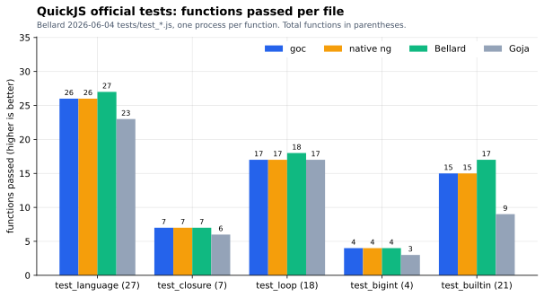
Bellard 2026-06-04 的 tests/test_language.js、test_closure.js、test_loop.js、test_bigint.js、test_builtin.js，由 scripts/qjs-official-tests.py 拆成每个函数一个进程。std / os 四家都没有，所以相关函数一起失败。结果和上一版相同，goc 与 native ng 逐函数一致。
| 文件 | n | goc | native ng | Bellard | Goja |
|---|---|---|---|---|---|
| test_language.js | 27 | 26 | 26 | 27 | 23 |
| test_closure.js | 7 | 7 | 7 | 7 | 6 |
| test_loop.js | 18 | 17 | 17 | 18 | 17 |
| test_bigint.js | 4 | 4 | 4 | 4 | 3 |
| test_builtin.js | 21 | 15 | 15 | 17 | 9 |
逐函数。pass 以外的格子是失败信息。
| 文件 | 函数 | goc | native ng | Bellard | Goja | |||||||
|---|---|---|---|---|---|---|---|---|---|---|---|---|
| test_language | test_op1 | pass | pass | pass | pass | |||||||
| test_language | test_cvt | pass | pass | pass | pass | |||||||
| test_language | test_eq | pass | pass | pass | pass | |||||||
| test_language | test_inc_dec | pass | pass | pass | pass | |||||||
| test_language | test_op2 | pass | pass | pass | pass | |||||||
| test_language | test_constructor | pass | pass | pass | FAIL Error: assertion failed: got \ | Value is not a constructor\ | , expected \ | G i | ||||
| test_language | test_delete | pass | pass | pass | pass | |||||||
| test_language | test_prototype | pass | pass | pass | pass | |||||||
| test_language | test_arguments | pass | pass | pass | pass | |||||||
| test_language | test_class | pass | pass | pass | FAIL SyntaxError: SyntaxError: <t>: Line 91:15 Unexpected token = (and 3 more er | |||||||
| test_language | test_template | pass | pass | pass | pass | |||||||
| test_language | test_template_skip | pass | pass | pass | pass | |||||||
| test_language | test_object_literal | pass | pass | pass | pass | |||||||
| test_language | test_regexp_skip | pass | pass | pass | pass | |||||||
| test_language | test_labels | pass | pass | pass | pass | |||||||
| test_language | test_labels2 | pass | pass | pass | pass | |||||||
| test_language | test_destructuring | pass | pass | pass | pass | |||||||
| test_language | test_spread | pass | pass | pass | pass | |||||||
| test_language | test_function_length | pass | pass | pass | pass | |||||||
| test_language | test_argument_scope | pass | pass | pass | FAIL Error: assertion failed: got \ | undefined\ | , expected \ | 12\ | at Error (nativ | |||
| test_language | test_function_expr_name | pass | pass | pass | pass | |||||||
| test_language | test_parse_semicolon | pass | pass | pass | pass | |||||||
| test_language | test_optional_chaining | pass | pass | pass | FAIL Error: assertion failed: got \ | {"b":{"c":2}}\ | , expected \ | {"b":{}}\ | (opti | |||
| test_language | test_parse_arrow_function | pass | pass | pass | pass | |||||||
| test_language | test_unicode_ident | FAIL qjscli:runtime: <t>: Error: assertion failed: got \ | number\ | , expected \ | un | FAIL Error: assertion failed: got \ | number\ | , expected \ | undefined\ | pass | pass | |
| test_language | test_global_var_opt | pass | pass | pass | pass | |||||||
| test_language | test_number_literals | pass | pass | pass | pass | |||||||
| test_closure | test_closure1 | pass | pass | pass | pass | |||||||
| test_closure | test_closure2 | pass | pass | pass | pass | |||||||
| test_closure | test_closure3 | pass | pass | pass | pass | |||||||
| test_closure | test_arrow_function | pass | pass | pass | FAIL Error: assertion failed: got \ | 4\ | , expected \ | 2\ | at Error (native) | |||
| test_closure | test_with | pass | pass | pass | pass | |||||||
| test_closure | test_eval_closure | pass | pass | pass | pass | |||||||
| test_closure | test_eval_const | pass | pass | pass | pass | |||||||
| test_loop | test_while | pass | pass | pass | pass | |||||||
| test_loop | test_while_break | pass | pass | pass | pass | |||||||
| test_loop | test_do_while | pass | pass | pass | pass | |||||||
| test_loop | test_for | pass | pass | pass | pass | |||||||
| test_loop | test_for_break | pass | pass | pass | pass | |||||||
| test_loop | test_switch1 | pass | pass | pass | pass | |||||||
| test_loop | test_switch2 | pass | pass | pass | pass | |||||||
| test_loop | test_for_in | pass | pass | pass | FAIL SyntaxError: SyntaxError: <t>: Line 90:17 for-in loop variable declaration | |||||||
| test_loop | test_for_in2 | pass | pass | pass | pass | |||||||
| test_loop | test_for_in_proxy | FAIL qjscli:runtime: <t>: Error: assertion failed: got \ | false\ | , expected \ | tru | FAIL Error: assertion failed: got \ | false\ | , expected \ | true\ | pass | pass | |
| test_loop | test_try_catch1 | pass | pass | pass | pass | |||||||
| test_loop | test_try_catch2 | pass | pass | pass | pass | |||||||
| test_loop | test_try_catch3 | pass | pass | pass | pass | |||||||
| test_loop | test_try_catch4 | pass | pass | pass | pass | |||||||
| test_loop | test_try_catch5 | pass | pass | pass | pass | |||||||
| test_loop | test_try_catch6 | pass | pass | pass | pass | |||||||
| test_loop | test_try_catch7 | pass | pass | pass | pass | |||||||
| test_loop | test_try_catch8 | pass | pass | pass | pass | |||||||
| test_bigint | test_bigint1 | pass | pass | pass | pass | |||||||
| test_bigint | test_bigint2 | pass | pass | pass | pass | |||||||
| test_bigint | test_bigint3 | pass | pass | pass | FAIL Error: assertion failed: got \ | -1\ | , expected \ | 18446744073709552000\ | at E | |||
| test_bigint | test_pi | pass | pass | pass | pass | |||||||
| test_builtin | test | pass | pass | pass | pass | |||||||
| test_builtin | test_function | pass | pass | pass | pass | |||||||
| test_builtin | test_enum | pass | pass | pass | pass | |||||||
| test_builtin | test_array | pass | pass | pass | pass | |||||||
| test_builtin | test_string | pass | pass | pass | FAIL panic: unexpected unicode length while parsing '\u{10ffff}' | |||||||
| test_builtin | test_math | pass | pass | pass | FAIL TypeError: Object has no member 'sumPrecise' at test_math (<t>:68:27(137)) | |||||||
| test_builtin | test_number | pass | pass | pass | pass | |||||||
| test_builtin | test_eval | pass | pass | pass | FAIL TypeError: Cannot read property 'length' of undefined at <eval>:1:11(2) | |||||||
| test_builtin | test_typed_array | pass | pass | pass | FAIL ReferenceError: Float16Array is not defined at test_typed_array (<t>:139:13 | |||||||
| test_builtin | test_json | FAIL qjscli:runtime: <t>: Error: unexpected line or column number. error=Bad esc | FAIL Error: unexpected line or column number. error=Bad escaped character in JSO | pass | FAIL Error: unexpected line or column number. error=invalid character 'x' in str | |||||||
| test_builtin | test_date | pass | pass | pass | FAIL Error: assertion failed: got number:\ | 29256\ | , expected number:\ | 29312\ | (o | |||
| test_builtin | test_regexp | pass | pass | pass | FAIL SyntaxError: SyntaxError: Invalid flags supplied to RegExp constructor 'gvi | |||||||
| test_builtin | test_symbol | pass | pass | pass | pass | |||||||
| test_builtin | test_map | pass | pass | pass | pass | |||||||
| test_builtin | test_weak_map | FAIL qjscli:runtime: <t>: ReferenceError: std is not defined | FAIL ReferenceError: std is not defined | FAIL ReferenceError: 'std' is not defined | FAIL TypeError: Value is not an object: x1 at set (native) | |||||||
| test_builtin | test_weak_map_cycles | FAIL qjscli:runtime: <t>: ReferenceError: std is not defined | FAIL ReferenceError: std is not defined | FAIL ReferenceError: 'std' is not defined | FAIL ReferenceError: std is not defined at test_weak_map_cycles (<t>:24:5(15)) | |||||||
| test_builtin | test_weak_ref | FAIL qjscli:runtime: <t>: ReferenceError: std is not defined | FAIL ReferenceError: std is not defined | FAIL ReferenceError: 'std' is not defined | FAIL ReferenceError: WeakRef is not defined at test_weak_ref (<t>:61:18(18)) | |||||||
| test_builtin | test_finalization_registry | FAIL qjscli:runtime: <t>: ReferenceError: os is not defined | FAIL ReferenceError: os is not defined | FAIL ReferenceError: 'os' is not defined | FAIL ReferenceError: FinalizationRegistry is not defined at test_finalization_re | |||||||
| test_builtin | test_generator | pass | pass | pass | pass | |||||||
| test_builtin | test_rope | pass | pass | pass | pass | |||||||
| test_builtin | test_line_column_numbers | FAIL qjscli:runtime: <t>: Error: unexpected line or column number. error=hello.g | FAIL Error: unexpected line or column number. error=hello.got \ | at <eval> (< | pass | FAIL Error: unexpected line or column number. error=SyntaxError: <eval>: Line 2: |
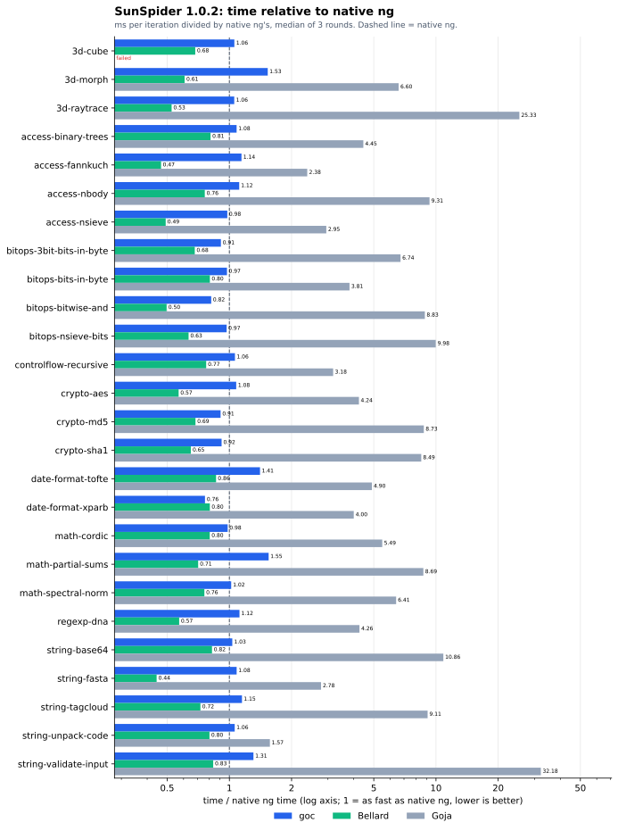
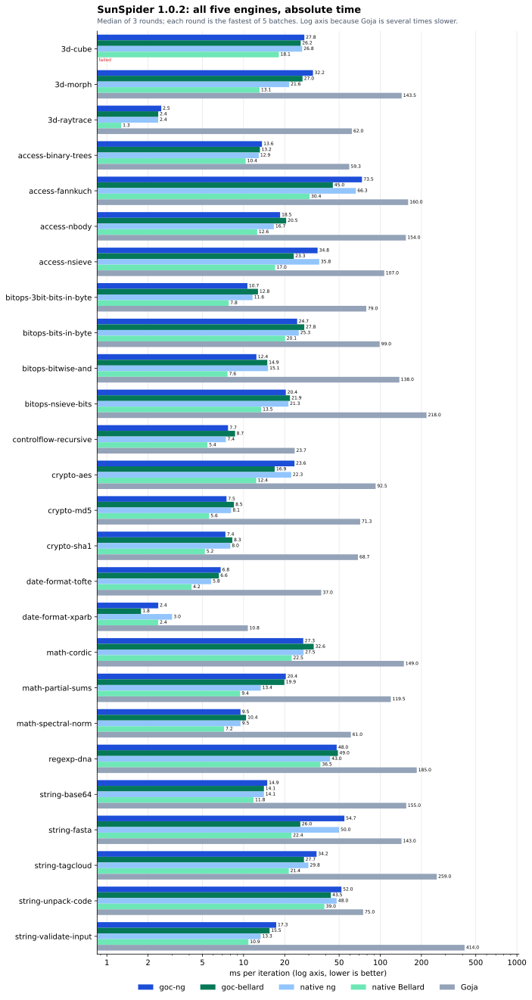
第一张图是每项耗时除以 native ng 的耗时（对数轴，虚线是 native ng），第二张是四家的绝对耗时（对数轴）。两张图都包含 Goja。
WebKit sunspider-1.0.2，由 scripts/sunspider-wrap.py 包装：每个文件包进一个函数，document.write 打了桩。先连续调用 150 ms 定下次数 n，再跑 5 批、每批 n 次，取最快一批的平均单次耗时，用 Date.now 计时。ms/次，越低越快，每项取 3 轮中位数。
上一版里 3d-cube 和 string-tagcloud 在 goc 上失败，后来修好了但没有重测。这次两项都有计时，goc 相对 native ng 分别是 1.06 和 1.15。Goja 的 3d-cube 仍然失败（向量和与期望值差在最后几位），所以四家的几何平均是 25 项，不含 Goja 的三家几何平均是 26 项。
| 测试 | goc | native ng | Bellard | Goja | goc/ng |
|---|---|---|---|---|---|
| 3d-cube | 27.83 | 26.33 | 18.00 | 失败 | 1.06 |
| 3d-morph | 32.20 | 21.00 | 12.75 | 138.50 | 1.53 |
| 3d-raytrace | 2.38 | 2.25 | 1.18 | 57.00 | 1.06 |
| access-binary-trees | 13.64 | 12.58 | 10.20 | 56.00 | 1.08 |
| access-fannkuch | 74.00 | 64.67 | 30.20 | 154.00 | 1.14 |
| access-nbody | 18.22 | 16.33 | 12.42 | 152.00 | 1.12 |
| access-nsieve | 34.00 | 34.80 | 17.11 | 102.50 | 0.98 |
| bitops-3bit-bits-in-byte | 10.33 | 11.36 | 7.72 | 76.50 | 0.91 |
| bitops-bits-in-byte | 24.50 | 25.17 | 20.25 | 96.00 | 0.97 |
| bitops-bitwise-and | 12.25 | 15.00 | 7.45 | 132.50 | 0.82 |
| bitops-nsieve-bits | 20.12 | 20.75 | 13.17 | 207.00 | 0.97 |
| controlflow-recursive | 7.65 | 7.19 | 5.55 | 22.86 | 1.06 |
| crypto-aes | 23.43 | 21.71 | 12.33 | 92.00 | 1.08 |
| crypto-md5 | 7.30 | 8.05 | 5.52 | 70.33 | 0.91 |
| crypto-sha1 | 7.24 | 7.89 | 5.14 | 67.00 | 0.92 |
| date-format-tofte | 6.80 | 4.83 | 4.17 | 23.67 | 1.41 |
| date-format-xparb | 2.00 | 2.62 | 2.11 | 10.50 | 0.76 |
| math-cordic | 26.17 | 26.67 | 21.43 | 146.50 | 0.98 |
| math-partial-sums | 19.88 | 12.83 | 9.06 | 111.50 | 1.55 |
| math-spectral-norm | 9.44 | 9.25 | 7.00 | 59.33 | 1.02 |
| regexp-dna | 47.00 | 42.00 | 24.00 | 179.00 | 1.12 |
| string-base64 | 14.27 | 13.82 | 11.38 | 150.00 | 1.03 |
| string-fasta | 53.67 | 49.50 | 22.00 | 137.50 | 1.08 |
| string-tagcloud | 33.60 | 29.20 | 21.14 | 266.00 | 1.15 |
| string-unpack-code | 50.67 | 47.75 | 38.25 | 75.00 | 1.06 |
| string-validate-input | 16.78 | 12.83 | 10.71 | 413.00 | 1.31 |
| 几何平均 25 项（四家都通过） | 16.27 | 15.28 | 10.24 | 92.82 | 1.07 |
| 几何平均 26 项（不含 Goja） | 16.61 | 15.60 | 10.47 | — | 1.07 |
goc 在 bitops、crypto-md5/sha1 和 date-format-xparb 上比 native ng 快。慢得最多的是 math-partial-sums、3d-morph、date-format-tofte 和 string-validate-input。前三项大量调用 Math.* 或 Date，goc 的 libm 和时间函数要经过桥接调用 glibc，差距可能来自这里；这一点没有用 profile 确认。
各轮的几何平均（同一批 25 项）：
| 引擎 | 各轮几何平均（25 项） |
|---|---|
| goc | 16.45 / 16.30 / 16.20 |
| ng | 15.22 / 15.32 / 15.42 |
| bellard | 10.25 / 10.58 / 10.12 |
| goja | 92.90 / 93.14 / 92.63 |
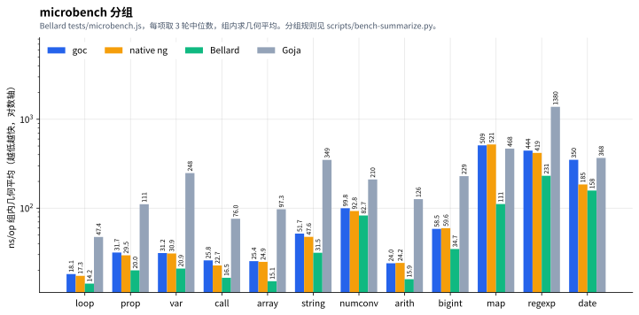
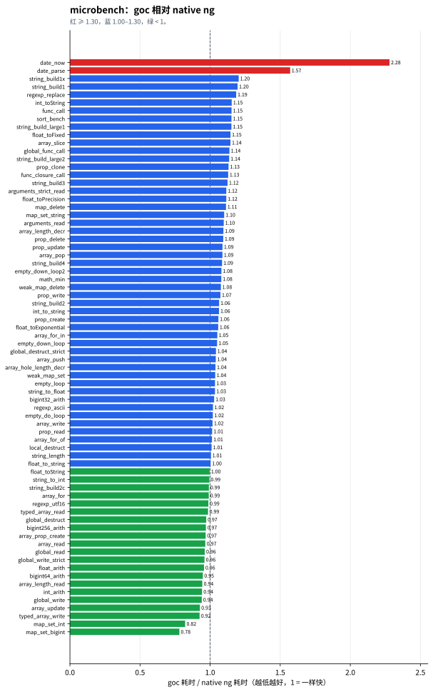
第二张图是每项耗时除以 native ng 的耗时，goc、Bellard、Goja 三家并排（对数轴，虚线是 native ng），按 goc 的比值从慢到快排。
Bellard 树的 tests/microbench.js，前面加了一行 console 兜底（goc 的 qjscli 没有 console 全局）。TIME 列，ns/op，越低越快，每项取 3 轮中位数。没有参考文件，所以 SCORE 列是空的。
performance.now 计时。Goja 的 performance.now 由 scripts/gojacli 提供，所以它的数字不再是上一版那种整 50 ns 的粒度。Date.prototype.toGMTString 指到 toUTCString 才能跑完（gojacli --micro），否则会停在 date_parse。Date.parse 自检失败，这一项没有数字。这次 goc 通过了自检，date_parse 有了计时，也计入几何平均，所以这次是 72 项，上一版是 71 项。| goc | native ng | Bellard | Goja | |
|---|---|---|---|---|
| TIME 总和（中位数） | 13845 | 14587 | 4378 | 37335 |
| 几何平均 72 项 | 53.2 | 50.3 | 31.0 | 188.2 |
TIME 总和被 map_set_int 和 map_set_bigint 这两项主导：native ng 和 goc 在这两项上都要 3 到 4 µs，Bellard 只要 0.1 µs。所以 goc 的总和比 native ng 小，但几何平均更能反映整体。
分组是按测试名前缀划的，每项只属于一组，规则在 scripts/bench-summarize.py 的 MICRO_GROUPS 里，和上一版的分组不同。组内是几何平均。
| 组 | 项数 | goc | native ng | Bellard | Goja | goc/ng |
|---|---|---|---|---|---|---|
| loop | 4 | 18.1 | 17.3 | 14.2 | 47.4 | 1.05 |
| prop | 6 | 31.7 | 29.5 | 20.0 | 110.7 | 1.08 |
| var | 8 | 31.2 | 30.9 | 20.9 | 248.3 | 1.01 |
| call | 3 | 25.8 | 22.7 | 16.5 | 76.0 | 1.14 |
| array | 16 | 25.4 | 24.9 | 15.1 | 97.3 | 1.02 |
| string | 11 | 51.7 | 47.6 | 31.5 | 348.9 | 1.09 |
| numconv | 7 | 99.8 | 92.8 | 82.7 | 210.4 | 1.07 |
| arith | 3 | 24.0 | 24.2 | 15.9 | 126.3 | 0.99 |
| bigint | 3 | 58.5 | 59.6 | 34.7 | 229.3 | 0.98 |
| map | 6 | 509.3 | 520.6 | 111.3 | 467.8 | 0.98 |
| regexp | 3 | 444.3 | 418.7 | 231.4 | 1379.8 | 1.06 |
| date | 2 | 349.7 | 184.8 | 157.8 | 367.6 | 1.89 |
最慢的几项（按 goc / native ng 排），同时列出 Bellard 和 Goja 相对 native ng 的比值：
| 测试 | goc/ng | Bellard/ng | Goja/ng |
|---|---|---|---|
| date_now | 2.28 | 0.75 | 2.50 |
| date_parse | 1.57 | 0.97 | 1.58 |
| string_build1x | 1.20 | 0.46 | 3.84 |
| string_build1 | 1.20 | 0.47 | 3.84 |
| regexp_replace | 1.19 | 0.37 | 0.84 |
| int_toString | 1.15 | 0.87 | 3.71 |
| func_call | 1.15 | 0.74 | 3.52 |
| sort_bench | 1.15 | 0.74 | 3.19 |
date_now 和 date_parse 是 goc 最明显的短板，这两项都要经过桥接取时间或时区。date_now 在上一版是 4.53 倍，现在是 2.28 倍。map_set_int 在上一版是 2.08 倍，现在 goc 反而比 native ng 快；这和 2026-09-26 加入的 shim malloc 分档缓存对得上，但没有单独验证。
全部 TIME。
| 测试 | 组 | goc | native ng | Bellard | Goja | goc/ng |
|---|---|---|---|---|---|---|
| arguments_read | var | 150.90 | 137.54 | 93.25 | 1030.43 | 1.10 |
| arguments_strict_read | var | 126.55 | 113.46 | 77.22 | 1062.39 | 1.12 |
| array_for | array | 17.59 | 17.76 | 11.90 | 79.56 | 0.99 |
| array_for_in | array | 58.45 | 55.59 | 39.39 | 303.75 | 1.05 |
| array_for_of | array | 20.54 | 20.27 | 19.00 | 390.42 | 1.01 |
| array_hole_length_decr | array | 65.90 | 63.48 | 50.27 | 151.11 | 1.04 |
| array_length_decr | array | 49.44 | 45.16 | 34.13 | 167.41 | 1.09 |
| array_length_read | array | 11.00 | 11.65 | 7.18 | 52.76 | 0.94 |
| array_pop | array | 69.37 | 63.77 | 56.60 | 203.35 | 1.09 |
| array_prop_create | array | 31.52 | 32.56 | 12.49 | 145.93 | 0.97 |
| array_push | array | 34.88 | 33.53 | 25.45 | 221.99 | 1.04 |
| array_read | array | 10.97 | 11.36 | 5.84 | 44.28 | 0.97 |
| array_slice | array | 17.70 | 15.46 | 12.82 | 81.90 | 1.14 |
| array_update | array | 12.81 | 13.82 | 8.28 | 63.51 | 0.93 |
| array_write | array | 27.33 | 26.87 | 6.72 | 27.67 | 1.02 |
| bigint256_arith | bigint | 95.87 | 98.85 | 70.51 | 245.26 | 0.97 |
| bigint32_arith | bigint | 40.57 | 39.44 | 21.21 | 214.84 | 1.03 |
| bigint64_arith | bigint | 51.44 | 54.26 | 27.97 | 228.73 | 0.95 |
| date_now | date | 155.75 | 68.32 | 51.26 | 170.83 | 2.28 |
| date_parse | date | 785.35 | 499.94 | 486.08 | 791.19 | 1.57 |
| empty_do_loop | loop | 17.40 | 17.07 | 14.35 | 50.60 | 1.02 |
| empty_down_loop | loop | 17.74 | 16.90 | 14.79 | 43.74 | 1.05 |
| empty_down_loop2 | loop | 22.14 | 20.49 | 20.04 | 51.64 | 1.08 |
| empty_loop | loop | 15.80 | 15.27 | 9.44 | 44.26 | 1.03 |
| float_arith | arith | 24.06 | 25.16 | 16.42 | 157.31 | 0.96 |
| float_toExponential | numconv | 111.63 | 105.55 | 89.83 | 245.14 | 1.06 |
| float_toFixed | numconv | 97.04 | 84.74 | 79.09 | 509.34 | 1.15 |
| float_toPrecision | numconv | 114.07 | 102.28 | 93.76 | 266.50 | 1.12 |
| float_toString | numconv | 220.55 | 221.38 | 211.08 | 204.28 | 1.00 |
| float_to_string | numconv | 210.46 | 209.73 | 203.72 | 192.90 | 1.00 |
| func_call | call | 23.77 | 20.62 | 15.29 | 72.53 | 1.15 |
| func_closure_call | call | 28.42 | 25.18 | 18.95 | 71.03 | 1.13 |
| global_destruct | var | 37.82 | 38.90 | 28.08 | 382.48 | 0.97 |
| global_destruct_strict | var | 39.16 | 37.60 | 28.67 | 414.87 | 1.04 |
| global_func_call | call | 25.53 | 22.44 | 15.42 | 85.28 | 1.14 |
| global_read | var | 9.58 | 9.96 | 5.38 | 52.93 | 0.96 |
| global_write | var | 11.04 | 11.74 | 7.38 | 76.15 | 0.94 |
| global_write_strict | var | 11.20 | 11.67 | 7.50 | 93.52 | 0.96 |
| int_arith | arith | 17.80 | 18.89 | 11.95 | 94.41 | 0.94 |
| int_toString | numconv | 46.33 | 40.15 | 34.82 | 148.93 | 1.15 |
| int_to_string | numconv | 37.07 | 34.86 | 26.44 | 93.57 | 1.06 |
| local_destruct | var | 27.04 | 26.76 | 21.25 | 220.33 | 1.01 |
| map_delete | map | 190.38 | 171.02 | 165.63 | 555.52 | 1.11 |
| map_set_bigint | map | 3315.43 | 4246.68 | 107.64 | 566.22 | 0.78 |
| map_set_int | map | 3377.58 | 4110.10 | 79.62 | 310.10 | 0.82 |
| map_set_string | map | 191.26 | 173.85 | 163.61 | 519.91 | 1.10 |
| math_min | arith | 32.27 | 29.89 | 20.40 | 135.80 | 1.08 |
| prop_clone | prop | 50.34 | 44.50 | 44.67 | 256.78 | 1.13 |
| prop_create | prop | 59.90 | 56.56 | 39.55 | 134.86 | 1.06 |
| prop_delete | prop | 84.11 | 76.92 | 67.42 | 354.51 | 1.09 |
| prop_read | prop | 11.93 | 11.76 | 7.00 | 50.93 | 1.01 |
| prop_update | prop | 18.64 | 17.13 | 9.88 | 72.95 | 1.09 |
| prop_write | prop | 17.99 | 16.76 | 7.67 | 40.32 | 1.07 |
| regexp_ascii | regexp | 206.67 | 202.57 | 139.49 | 1095.69 | 1.02 |
| regexp_replace | regexp | 1940.28 | 1636.18 | 604.87 | 1382.14 | 1.19 |
| regexp_utf16 | regexp | 218.70 | 221.47 | 146.84 | 1734.55 | 0.99 |
| sort_bench | array | 21.81 | 18.93 | 13.98 | 60.38 | 1.15 |
| string_build1 | string | 48.91 | 40.90 | 19.07 | 157.12 | 1.20 |
| string_build1x | string | 49.28 | 40.94 | 18.79 | 157.02 | 1.20 |
| string_build2 | string | 50.91 | 47.84 | 32.82 | 159.88 | 1.06 |
| string_build2c | string | 55.92 | 56.41 | 24.18 | 327.96 | 0.99 |
| string_build3 | string | 48.63 | 43.26 | 31.20 | 168.51 | 1.12 |
| string_build4 | string | 48.78 | 44.95 | 35.89 | 157.12 | 1.09 |
| string_build_large1 | string | 62.64 | 54.38 | 41.45 | 9503.05 | 1.15 |
| string_build_large2 | string | 59.81 | 52.66 | 40.70 | 8560.60 | 1.14 |
| string_length | string | 13.74 | 13.66 | 8.59 | 105.53 | 1.01 |
| string_to_float | string | 103.70 | 100.23 | 93.81 | 225.05 | 1.03 |
| string_to_int | string | 81.93 | 82.40 | 69.68 | 140.79 | 0.99 |
| typed_array_read | array | 12.01 | 12.19 | 8.11 | 46.93 | 0.99 |
| typed_array_write | array | 28.32 | 30.62 | 7.61 | 43.07 | 0.92 |
| weak_map_delete | map | 285.15 | 264.83 | 141.47 | 807.35 | 1.08 |
| weak_map_set | map | 150.05 | 144.79 | 57.93 | 256.02 | 1.04 |
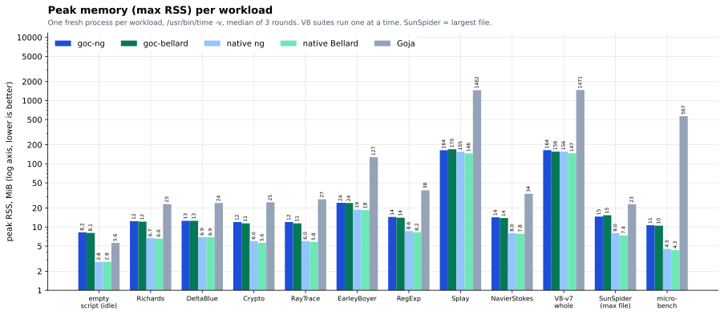
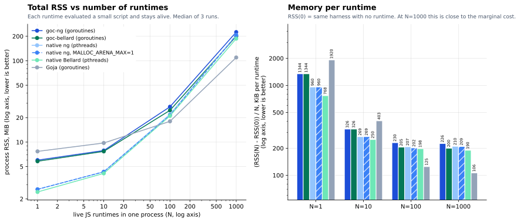
这一节在 2026-09-27 北京时间 11:16–12:05 测量，由 scripts/bench-mem.sh 一次跑完。单位 MiB 和 KiB 都按 1024 进位，越低越好。
测量分两部分：
/usr/bin/time -v 读 Maximum resident set size。命令行和计时套件完全相同（goc 用 qjscli --stack-size 16384，native ng 加 -C），也用 taskset -c 3 固定在同一个核上。每个引擎跑 3 轮，轮与轮之间轮换引擎顺序，表里是中位数。tests/qjscli/instance.js）后保持存活，然后读进程的 VmRSS。N 取 0、1、10、100、1000，每个点跑 3 次取中位数。这部分没有绑核，理由见本节末尾的注意事项。空脚本是一个空文件，它的峰值就是引擎进程本身的空载占用。V8-v7 的 8 个子项各跑一个进程：文件还是 bench-v8.js，只是在 Run() 前把 BenchmarkSuite.suites 过滤成一个，所以其他子项的代码仍会被解析，但不会运行。SunSpider 每个文件本来就是一个进程，这里取 26 个文件里的最大值，每个文件的数字列在后面。
| 负载 | goc | native ng | Bellard | Goja | goc/ng | Bellard/ng | Goja/ng |
|---|---|---|---|---|---|---|---|
| 空脚本（空载） | 8.5 | 2.9 | 2.9 | 5.9 | 2.89 | 0.98 | 2.01 |
| V8 Richards | 12.6 | 6.7 | 6.6 | 21.8 | 1.88 | 0.99 | 3.25 |
| V8 DeltaBlue | 12.7 | 7.0 | 6.9 | 24.3 | 1.82 | 0.99 | 3.47 |
| V8 Crypto | 12.0 | 5.9 | 5.6 | 26.3 | 2.05 | 0.96 | 4.49 |
| V8 RayTrace | 12.1 | 5.9 | 5.6 | 24.9 | 2.06 | 0.96 | 4.24 |
| V8 EarleyBoyer | 24.6 | 18.8 | 18.3 | 124.1 | 1.31 | 0.98 | 6.61 |
| V8 RegExp | 14.5 | 8.6 | 8.2 | 40.1 | 1.68 | 0.95 | 4.65 |
| V8 Splay | 164.2 | 154.8 | 146.5 | 1002.6 | 1.06 | 0.95 | 6.48 |
| V8 NavierStokes | 14.5 | 8.1 | 8.0 | 31.0 | 1.80 | 0.99 | 3.84 |
| V8-v7 整套 | 164.5 | 155.5 | 147.0 | 1374.2 | 1.06 | 0.95 | 8.84 |
| SunSpider（26 个文件中的最大值） | 14.7 | 8.1 | 7.5 | 23.7 | 1.82 | 0.93 | 2.92 |
| microbench | 11.0 | 4.5 | 4.4 | 368.2 | 2.45 | 0.98 | 81.75 |
| alloc.js | 8.7 | 3.0 | 2.8 | 18.2 | 2.87 | 0.94 | 6.03 |
| mapset.js | 18.4 | 12.5 | 10.4 | 36.5 | 1.47 | 0.83 | 2.92 |
Goja 的 SunSpider 3d-cube 失败（与计时部分相同），它的 SunSpider 最大值只统计另外 25 个文件。
goc 比 native ng 多出的部分基本是一个常数，而不是一个比例。空载时 goc 是 8.5 MiB，native ng 是 2.9 MiB，差 5.6 MiB；小负载上的差距也在 6 MiB 左右，所以比值接近 2 倍。到了 Splay 和整套 V8 这种一百多 MiB 的负载，差距仍然只有 9 MiB 左右，比值降到 1.06。这说明 QuickJS 对象本身在 goc 的 shim 堆里并没有明显变大，多出来的是进程级的固定开销。这部分固定开销的来源有几项推测，都没有逐项验证：Go 运行时本身；qjscli 二进制比 native qjs 大（4.7 MB 对 1.3 MB），载入的代码页更多；qjscli 启动时 forceGrow(40) 把主 goroutine 的栈预先撑到 1 MiB 以上。一个旁证是，下面的多实例探针（同一套 goc 目标文件，但不调用 forceGrow，也不装 CLI 的宿主对象）在 N=0 时只有 4.8 MiB。
Bellard 比 native ng 略低，多数负载低 1% 到 7%，mapset.js 低 17%。
Goja 的峰值高得多：Splay 约 1 GiB，是 native ng 的 6.5 倍；整套 V8 是 1.34 GiB，达 8.8 倍；microbench 是 368 MiB，达 82 倍。可能的原因是 Go 的垃圾回收在默认 GOGC=100 下允许堆长到上次存活量的两倍左右，再加上 Goja 的对象和字符串表示比 QuickJS 占空间，microbench 里 string_build_large* 这类构造大字符串的测试尤其明显（Goja 在这两项上也慢 160 多倍）。这些都是推测，没有做堆剖析。
SunSpider 各文件的峰值（MiB）：
| 测试 | goc | native ng | Bellard | Goja |
|---|---|---|---|---|
| 3d-cube | 9.3 | 3.6 | 3.3 | 失败 |
| 3d-morph | 11.3 | 4.1 | 3.8 | 15.3 |
| 3d-raytrace | 9.3 | 3.5 | 3.3 | 16.9 |
| access-binary-trees | 9.0 | 3.2 | 3.1 | 12.3 |
| access-fannkuch | 8.7 | 3.2 | 2.8 | 7.6 |
| access-nbody | 8.9 | 3.2 | 3.0 | 12.5 |
| access-nsieve | 13.8 | 6.4 | 6.1 | 17.8 |
| bitops-3bit-bits-in-byte | 8.7 | 3.2 | 2.9 | 12.5 |
| bitops-bits-in-byte | 8.6 | 3.1 | 2.8 | 12.3 |
| bitops-bitwise-and | 8.6 | 3.1 | 2.8 | 12.5 |
| bitops-nsieve-bits | 8.9 | 3.2 | 3.0 | 13.0 |
| controlflow-recursive | 8.7 | 3.5 | 3.1 | 7.8 |
| crypto-aes | 9.0 | 3.4 | 3.4 | 13.5 |
| crypto-md5 | 9.2 | 3.4 | 3.2 | 13.4 |
| crypto-sha1 | 8.9 | 3.4 | 3.1 | 13.3 |
| date-format-tofte | 9.0 | 3.4 | 3.0 | 13.3 |
| date-format-xparb | 9.0 | 3.4 | 3.1 | 13.2 |
| math-cordic | 8.9 | 3.0 | 2.9 | 12.5 |
| math-partial-sums | 9.0 | 3.3 | 3.1 | 14.3 |
| math-spectral-norm | 8.8 | 3.1 | 2.9 | 12.4 |
| regexp-dna | 11.4 | 5.1 | 5.8 | 13.6 |
| string-base64 | 9.0 | 3.3 | 3.0 | 15.0 |
| string-fasta | 8.8 | 3.2 | 2.9 | 17.3 |
| string-tagcloud | 14.7 | 7.0 | 6.4 | 22.6 |
| string-unpack-code | 14.5 | 8.1 | 7.5 | 16.7 |
| string-validate-input | 9.7 | 3.8 | 3.6 | 14.4 |
这是 goc 使用场景里最关心的一项：一个 Go 进程里同时存活很多个 JS runtime 时，每多一个要多少内存。
build/qjs/qjsmem，它就是 qjscli 这个包加上构建标签 qjsmem 编出来的（代码在 tests/qjscli/mem_instances.go），和 qjscli 走同一条 scripts/qjs-cli-build.sh 流程、链接同一批 goc 目标文件。qjsmem --mem-instances N 启动 N 个 goroutine，每个 goroutine 各自 JS_NewRuntime + JS_NewContext，求值脚本后阻塞在一个 channel 上。默认的 qjscli 二进制里没有这段代码。tests/qjsmem/threads.c，分别链接 ng 的 libqjs.a（和 native qjs 同一次 CMake Release 构建）和 Bellard 上游 Makefile 编出的 .obj/*.o。每个 runtime 一个 pthread，线程栈设为 1 MiB（QJSMEM_STACK_KB），JS_SetMaxStackSize 设为线程栈的一半。线程栈只是预留，RSS 只算实际碰过的页。scripts/gojamem，每个 runtime 一个 goroutine，各持有一个 goja.Runtime。MALLOC_ARENA_MAX=1，用来看 glibc 每线程 malloc arena 的影响。进程 RSS（MiB）和每个 runtime 的边际内存：
| 引擎 | N=0 | N=1 | N=10 | N=100 | N=1000 | 每个 runtime（N=1→1000 斜率） | 最小二乘斜率 |
|---|---|---|---|---|---|---|---|
| goc（goroutine） | 4.8 | 6.5 | 8.5 | 27.7 | 225.8 | 225 KiB | 225 KiB |
| native ng（pthread） | 2.0 | 3.1 | 4.9 | 23.9 | 208.9 | 211 KiB | 211 KiB |
native ng，MALLOC_ARENA_MAX=1 | 2.1 | 3.1 | 4.9 | 23.4 | 208.4 | 210 KiB | 210 KiB |
| Bellard（pthread） | 2.1 | 3.0 | 4.7 | 21.9 | 188.1 | 190 KiB | 190 KiB |
| Goja（goroutine） | 5.8 | 8.0 | 10.0 | 19.0 | 110.8 | 105 KiB | 105 KiB |
斜率一列是 (RSS(1000) − RSS(1)) / 999；最小二乘斜率用 N=1、10、100、1000 四个点拟合，两者一致，说明在这个范围内是线性增长。
按 (RSS(N) − RSS(0)) / N 计算的每个 runtime 平均占用（KiB）。N 小的时候，第一个 runtime 要摊掉代码页、原子表等一次性开销，所以数字偏大：
| 引擎 | N=1 | N=10 | N=100 | N=1000 |
|---|---|---|---|---|
| goc（goroutine） | 1760 | 378 | 234 | 226 |
| native ng（pthread） | 1048 | 293 | 224 | 212 |
native ng，MALLOC_ARENA_MAX=1 | 1024 | 291 | 218 | 211 |
| Bellard（pthread） | 984 | 268 | 203 | 191 |
| Goja（goroutine） | 2248 | 435 | 136 | 108 |
每多一个 runtime，goc 要 225 KiB，native ng 要 211 KiB，goc 是 native ng 的 1.06 倍。Bellard 要 190 KiB。Goja 只要 105 KiB，是四家里最少的；可能是因为 Goja 的内建对象是按需创建的，一段不碰多少内建对象的小脚本用不到它们，这一点没有验证。注意这只是“空闲 runtime 的常驻成本”，Goja 在真正运行负载时峰值反而最高（见上一小节）。
MALLOC_ARENA_MAX=1 对 native ng 几乎没有影响（210 对 211 KiB）。推测是因为每个线程分到的 arena 只碰到了自己真正用过的页，所以在这个规模下 arena 的额外开销可以忽略；这一点没有单独验证。
主动回收之后再读一次 RSS：goc 和 Goja 调 runtime.GC() 加 debug.FreeOSMemory()，C 探针调 malloc_trim(0)：
| 引擎 | 回收方式 | N=0 | N=1 | N=10 | N=100 | N=1000 | 斜率 |
|---|---|---|---|---|---|---|---|
| goc（goroutine） | runtime.GC() + debug.FreeOSMemory() | 5.1 | 6.8 | 8.6 | 26.9 | 214.2 | 213 KiB |
| native ng（pthread） | malloc_trim(0) | 2.0 | 3.1 | 4.9 | 23.9 | 208.9 | 211 KiB |
native ng，MALLOC_ARENA_MAX=1 | malloc_trim(0) | 2.1 | 3.1 | 4.9 | 23.4 | 208.4 | 210 KiB |
| Bellard（pthread） | malloc_trim(0) | 2.1 | 3.0 | 4.7 | 21.9 | 188.1 | 190 KiB |
| Goja（goroutine） | runtime.GC() + debug.FreeOSMemory() | 6.2 | 8.3 | 9.4 | 17.3 | 91.6 | 85 KiB |
goc 的斜率从 225 降到 213 KiB，下降的部分来自 goroutine 栈被 GC 收缩（见下表）。回收后 goc 与 native ng 基本持平。Goja 从 105 降到 85 KiB，是 Go 堆里的垃圾被回收了。
goc 探针在所有 runtime 都进入阻塞后读 runtime.MemStats。“平均每个 goroutine 栈”是 (StackInuse(N) − StackInuse(0)) / N：
| N | RSS MiB | HeapSys MiB | HeapInuse MiB | StackSys MiB | StackInuse MiB | 平均每个 goroutine 栈 KiB | GC 后每个 goroutine 栈 KiB |
|---|---|---|---|---|---|---|---|
| 0 | 4.8 | 3.7 | 0.4 | 0.31 | 0.31 | — | — |
| 1 | 6.5 | 3.7 | 0.4 | 0.34 | 0.34 | 32.0 | 0.0 |
| 10 | 8.5 | 3.4 | 0.5 | 0.62 | 0.62 | 32.0 | 3.2 |
| 100 | 27.7 | 4.6 | 0.6 | 3.44 | 3.44 | 32.0 | 9.3 |
| 1000 | 225.8 | 4.4 | 1.5 | 31.56 | 31.56 | 32.0 | 8.1 |
N=1000 时，进程 RSS 是 225.8 MiB，Go 运行时自己申请的全部内存（Sys）是 38.6 MiB，其中 goroutine 栈 31.6 MiB，Go 堆 4.4 MiB。剩下约 187 MiB 不归 Go 运行时管，它们是 QuickJS 的 runtime、context 和对象，放在 goc 的 libc shim 堆里（64 MiB 的静态 arena，用满后改用 mmap 分配的 slab）。折合每个 runtime 约 187 KiB，和 native ng 每个 runtime 的 211 KiB（其中含 glibc malloc 的开销和线程栈碰过的页）处在同一量级。
每个 goroutine 的栈在求值后是 32 KiB。goroutine 的初始栈很小（Go 的最小栈是 2 KiB，Go 1.19 起初始大小还会按平均栈用量自适应），QuickJS 的解析器和解释器的 C 帧直接跑在 goroutine 栈上，栈就按倍数长到了 32 KiB；求值结束后栈不会立即缩回去，要等下一次 GC 扫描时才收缩。GC 之后平均降到 8 KiB 左右（N=1 和 N=10 的 GC 后数字受栈缓存复用影响，不可靠）。所以 goc 比 native ng 多出的那 14 KiB 左右，主要就是这 32 KiB 的 goroutine 栈，减去 native 线程栈实际碰过的页。这个解释和上面的数字对得上，但没有逐页核对。
Goja 的同一组数字作对照。它的内存主要在 Go 堆上（N=1000 时 HeapInuse 77.9 MiB），每个 goroutine 的栈只有 6 KiB 左右：
| N | RSS MiB | HeapSys MiB | HeapInuse MiB | StackSys MiB | StackInuse MiB | 平均每个 goroutine 栈 KiB | GC 后每个 goroutine 栈 KiB |
|---|---|---|---|---|---|---|---|
| 0 | 5.8 | 3.7 | 0.9 | 0.28 | 0.28 | — | — |
| 1 | 8.0 | 3.7 | 1.1 | 0.31 | 0.31 | 32.0 | 64.0 |
| 10 | 10.0 | 3.6 | 3.0 | 0.41 | 0.41 | 12.8 | 16.0 |
| 100 | 19.0 | 10.8 | 10.1 | 1.22 | 1.22 | 9.6 | 6.1 |
| 1000 | 110.8 | 98.0 | 77.9 | 6.03 | 6.03 | 5.9 | 4.2 |
GOGC 和 GOMEMLIMIT 都保持默认（GOGC=100，没有内存上限），没有测别的取值。调低 GOGC 通常能压低 Goja 的峰值，但会多花 GC 时间。GOMAXPROCS 是 1。多实例那部分没有绑核（8 个 vCPU，GOMAXPROCS=8），因为它测的是常驻内存而不是速度，而且 glibc 的 arena 上限和 Go 的每个 P 的缓存都跟 CPU 数有关，绑到一个核上反而不像真实部署。data/raw/mem-rss-*.txt、data/raw/mem-inst-r*.txt 和 data/raw/env-mem.txt，重跑用 scripts/bench-mem.sh。| 文件 | 内容 |
|---|---|
| data/all.json | 汇总后的全部数字（scripts/bench-summarize.py 生成） |
| data/raw/env-*.txt | 每个时段的时间、二进制和 sha256、轮数（env-microcall.txt 是微调用重跑，env-mem.txt 是内存测量，含探针二进制的 sha256） |
| data/raw/v8-\<引擎\>-r\<轮\>.txt | V8-v7 每轮原文，末行是墙钟 |
| data/raw/ss-\<引擎\>-r\<轮\>.txt | SunSpider 每轮每项的 ms/次 和 n |
| data/raw/micro-\<引擎\>-r\<轮\>.txt | microbench 每轮原文 |
| data/raw/microcall-r\<轮\>.txt | 微调用每轮原文，四个引擎 |
| data/raw/mem-rss-\<引擎\>-r\<轮\>.txt | 峰值 RSS，每行是 负载 最大RSS(KiB) 墙钟(s) 退出码 |
| data/raw/mem-inst-r\<轮\>.txt | 多实例，每行一个 MEMINST JSON（引擎、N、RSS，goc 和 Goja 另有 runtime.MemStats） |
| data/raw/test262-results.json | test262 抽样逐文件结果 |
| data/raw/qjs-tests-results.json | 官方测试逐函数结果 |
图都在 docs/benchmark/charts/，每张图有同名的 .png 和 .svg，本页嵌 PNG，report.html 嵌 SVG。图由 scripts/bench-charts.py 从 all.json 生成，图中文字是英文。